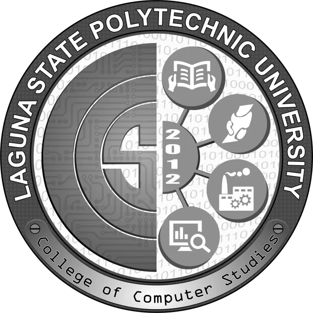
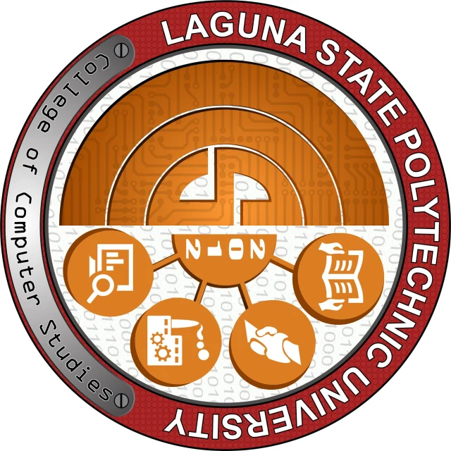

Pixels & intensity
For an 8-bit image, values range from 0 to 255. Small numbers, visible differences.
0255
See what a computer sees. Explore how digital images are represented, transformed, and brought to life—one pixel at a time.

[0, 255, 0]A computer reads an image as numbers. Each pixel holds intensity or color values; together, they form the shapes, textures, and details we see.
This activity introduces the foundations of image representation and the everyday operations that prepare images for computer vision.
For an 8-bit image, values range from 0 to 255. Small numbers, visible differences.
OpenCV reads Blue, Green, Red. Browser pixels use Red, Green, Blue, Alpha.
Color: (height, width, 3).
Grayscale: (height, width).
img[y, x] → pixelSelect a region, change its dimensions, or turn it through a quarter rotation.
From the handout’s objective to hands-on understanding.
Recognize pixels, channels, intensity, resolution, and the difference between grayscale and color.
Load and display an image, inspect its shape, examine a pixel, and change its color.
Convert to grayscale, crop an ROI, resize smaller or larger, and rotate by 90 degrees.
Start with the handout’s sample or choose your own image. Every experiment uses your original input, so you can compare each operation independently.
JPG, PNG, or WebP · up to 30 MB and 10 million pixels · transparency is composited on white
Display the original image and inspect its dimensions, channel ordering, pixel count, and uncompressed memory size.
——A magnified neighborhood makes the single-pixel edit visible.
Shape uses height before width. OpenCV’s three color channels are BGR; browser display data is RGBA. The source’s dimensions are preserved when it is loaded.
Same concepts, a browser implementation. Live demos use real pixel operations written in JavaScript, processed in a Web Worker. Browser images use RGBA; the display reports the equivalent OpenCV BGR shape. JPEG decoding and resize rounding may differ slightly between browser and OpenCV.
Live results from this visit · latest 12 runs retained in memory · export before closing the page
Run an experiment to record its dimensions, parameters, timing, and preview.
These are previews of actual OpenCV outputs from the handout logo. They are reference results, separate from your live session. The original color image was (2048, 2048, 3).

The crop and half-size resize have identical dimensions but different content. The crop isolates the center; the resize keeps the whole image. The 150% enlargement is 3072 × 3072. The square image keeps the same dimensions when rotated, although its orientation changes.
The handout contains tasks and summary discussion prompts rather than a numbered questionnaire. These answers cover each concept and required operation.
Download full answersA grayscale image is a two-dimensional array of intensity values with shape (height, width). A color image has an additional channel dimension, usually (height, width, 3). This third array dimension contains color components, not scene depth. Pixels are indexed as img[y, x], starting at zero.
For this 8-bit sample, grayscale stores one value per pixel: 0 is black, 255 is white, and intermediate values are gray. Color stores three components per pixel. Other image types can use different bit depths and ranges. Grayscale conversion preserves spatial resolution while discarding color information.
The sample shape (2048, 2048, 3) means 2048 rows, 2048 columns, and three channels. OpenCV loads color images in Blue, Green, Red order. (255, 0, 0) is therefore blue in OpenCV. Browser Canvas uses Red, Green, Blue, Alpha instead. Width × height is the resolution; width times height is the pixel count.
Python uses cv2.imread(path, cv2.IMREAD_COLOR), then cv2.imshow to display the image and img.shape to inspect it. Check that loading did not return None. cv2.waitKey(0) waits for a key; cv2.destroyAllWindows() closes the display windows. This website draws decoded input on a Canvas.
Use cv2.cvtColor(img, cv2.COLOR_BGR2GRAY). The approximate brightness weights are Y = 0.114B + 0.587G + 0.299R. In the original Python run, BGR [23, 111, 201] at (x=512, y=1024) became intensity 128. Grayscale has one logical channel even when a browser repeats the value across RGB for display.
In a copy, assigning modified[1024, 512] = (0, 255, 0) changes that source pixel to green. Its original BGR value was [23, 111, 201]. Exactly one pixel changes. An 11 × 11 neighborhood, enlarged with nearest neighbor, makes the change visible without modifying an entire source region.
Cropping selects part of an image. img[512:1536, 512:1536] selects the center 1024 × 1024 ROI; the stop indices are excluded. Resizing changes the dimensions of the whole image. The sample reduced to 50% is also 1024 × 1024 but retains the entire logo. Enlarging to 150% gives 3072 × 3072 and cannot restore detail absent from the source.
cv2.rotate(img, cv2.ROTATE_90_CLOCKWISE) changes orientation by a quarter-turn. The height and width swap. A square 2048 × 2048 source therefore retains its dimensions; a 640 × 480 image becomes 480 × 640. This operation rearranges pixels without interpolation.
Pixel values are the data that image-processing algorithms examine and change. Channels separate color components; using the correct ordering prevents incorrect colors. This sample contains 4,194,304 pixels. Its raw BGR array uses 12,582,912 bytes and its grayscale array uses 4,194,304 bytes, excluding array overhead. Compressed image file sizes and browser RGBA storage differ.
Document scanning uses cropping, rotation, and grayscale before OCR. Product inspection focuses on regions where defects may appear. Traffic monitoring resizes camera frames and selects road ROIs. Photo tools resize and rotate images for display. These are applications of the concepts, not additional required experiments.
Images become understandable when we treat them as data. This activity connects pixel values and color channels to visible changes, from a single edited pixel to a transformed image.
Grayscale combines channels. Cropping selects content. Resizing changes the sampling grid. Rotation rearranges positions. Together, these operations prepare us for more advanced work in feature extraction and object detection.
Read the laboratory report